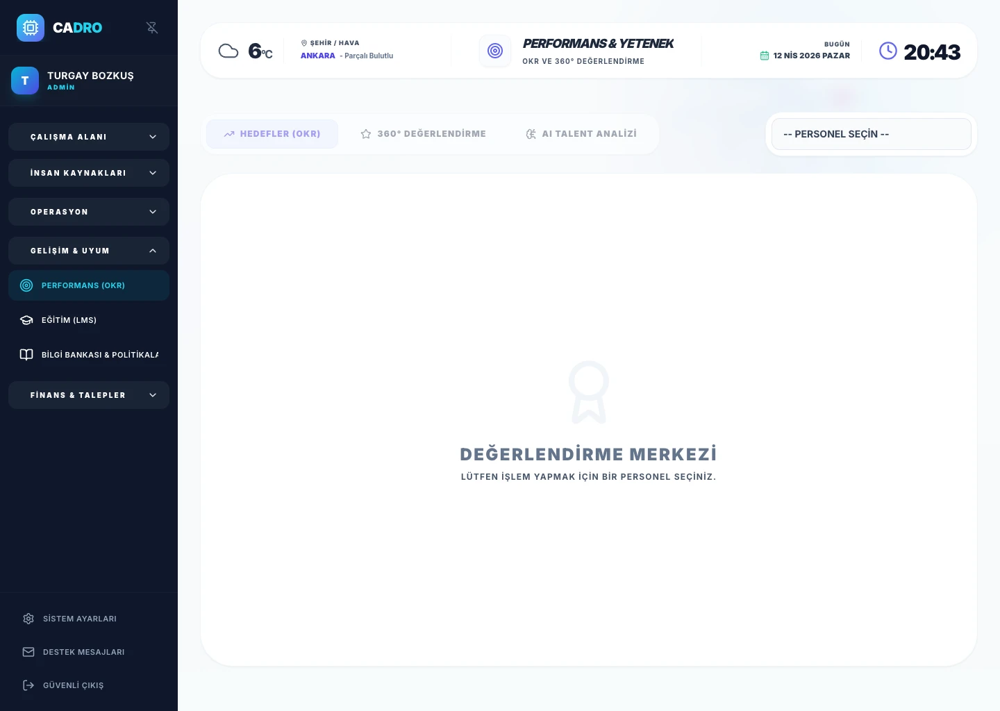

OKR Goal Management
Define goals at company, team, and individual level with title, description, and due date. Progress is tracked on a 0–100% scale; status appears as TODO / IN_PROGRESS / COMPLETED.

PERFORMANCE & OKR
Performance management software: Manage 360-degree feedback, OKR tracking, and performance evaluations within the same structure. With CADRO, teams can see their goals more clearly, managers make better decisions, and employee engagement increases significantly.

HOW IT WORKS
Annual reviews feel unfair, goals are unclear, and there is no visibility into individual or team performance.
Continuous OKR tracking, 360-degree feedback, and transparent performance dashboards for everyone.
Data-driven promotions, higher engagement, and alignment between individual and company goals.
PERFORMANCE MODULE
Define goals at company, team, and individual level with title, description, and due date. Progress is tracked on a 0–100% scale; status appears as TODO / IN_PROGRESS / COMPLETED.
Scores are collected from 4 sources: manager, peer, self-assessment, and direct report (1–5 stars). Comments and overall decision accumulate on the same card for each period.
Collected evaluation data is sent to Gemini AI. The system automatically summarizes the employee's strengths, development areas, and career potential.
Each evaluation period (e.g., "2025 Year-End") is closed and archived separately. Historical comparison makes the employee's development trajectory visible.
Managers can review performance profiles of different employees side by side. Promotion and development decisions are made data-driven.
Score and comment data flows into career fairness analysis. High-potential profiles and at-risk talents are identified early.
EVALUATION FLOW
Create performance cycles, assign evaluators, and generate reports. Decisions are made based on data, not opinions.
Explore Digital Dossier Module →
INTERNAL LINKS
Complete employee profiles feed into performance evaluations automatically.
Explore Dossier Module →Link onboarding completion to first performance cycle entry.
Explore Onboarding Module →Attendance patterns provide additional context for performance reviews.
Explore Attendance Module →FAQ
An OKR (Objectives & Key Results) focuses on ambitious goals with measurable outcomes, while KPIs track ongoing performance metrics. CADRO supports both.
Yes. You can create custom competency matrices, scoring scales, and evaluation questions for each role or department.
Yes. Evaluations can include self-assessment, manager review, peer feedback, and direct-report input in a single cycle.
READY?
Set objectives, gather feedback, and make fair promotion decisions with CADRO.